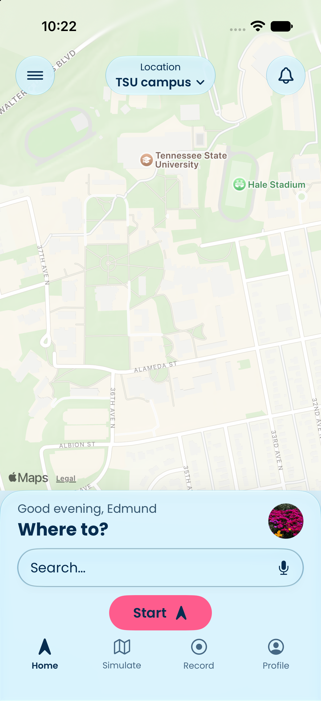
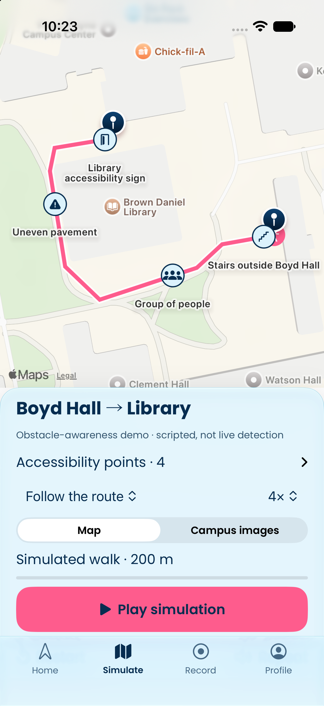
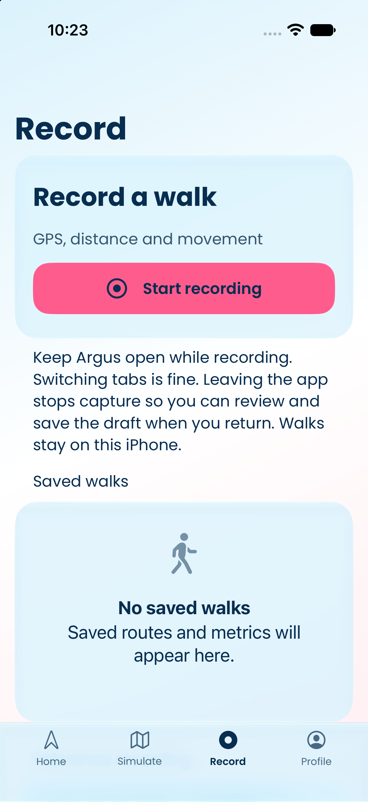

What Argus is
Why campus wayfinding is hard
What we are building
Functional and non-functional
Architecture, then eight subsystems
Prototype and timeline
Argus helps blind and low-vision pedestrians move around Tennessee State University using spoken directions and vibration, without needing to watch a screen.
Runs the app. Its GPS, compass, accelerometer and gyroscope track where the user is and which way they face.
Camera, microphone and speakers for landmarks, voice commands and audio, where supported. The phone takes over if they disconnect.
Sidewalks, crossings, ramps, stairs and entrances, mapped by our team and checked on foot.
Mainstream navigation apps assume you can look at the screen. Near buildings, GPS readings also drift, often right where decisions happen.
A building is not a destination. A usable, accessible door is.
The instruction has to come before the decision point.
Detect the departure, then recover, or say so if location is unreliable.
Map selected routes, entrances and accessibility features. Check them on foot.
Plan accessible routes, announce turns early, and recover from deviations.
Use supported glasses features and recognize selected landmarks.
Record and replay walks, run supervised trials, and review accessibility.
A full journey works with VoiceOver and supported voice commands.
Instructions arrive early enough to act on before the decision point.
Unreliable location, no route or a dropped wearable is announced, never hidden.
Every decision can be replayed from saved inputs, and users control their recordings.
Positioning, routing and guidance run on the phone. Glasses and watch are extra ways to interact, so navigation never depends on them.
Mapping and model training happen on the team laptop before deployment. Nothing is trained while someone is walking.
If location is unreliable or no accessible route exists, the user is told, instead of getting directions that may be wrong.
Recorded readings enter Positioning exactly like live ones, so every subsystem can be developed and tested on its own.

Voice destination input and a walking-route preview.

Turn cues and route deviation driven by repeatable movement.

Captures GPS, accuracy, sensors and manual marks.
Walk the study routes. Record entrances, stairs and alternatives.
One session for live and replayed inputs, routing and recovery.
Confirm glasses features. Train and test a small landmark model.
Accessibility, cue timing, route completion and failure cases.
Software, route data, replay fixtures, results and guides.
Edmund Afunyah · Sydney Apenteng
Advisor & Instructor: Dr. Ali Sekmen · Tennessee State University